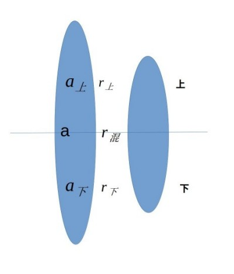
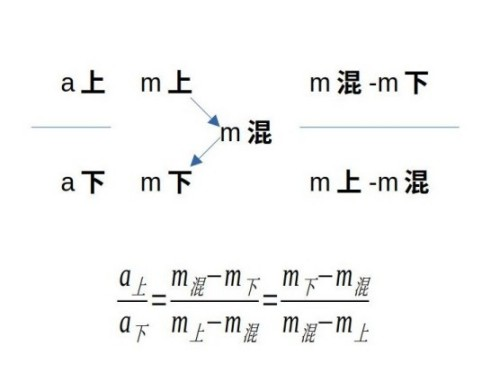

做题顺序
第一步：看材料，画出时间，主题，单位
第二步：看题目，判断题型
第三步：找到题型对应公式
第四步：到材料中找数，代入公式
第五步：看选项，估算结果
题型
| a1 |
基期量 |
| a2 |
现期量 |
Δ
|
增长量 |
| r |
增长率 |
| t |
倍数 |
| p |
比重 |
| m |
平均数 |
`a_1=a_2 - Δ =a_2/(1+r) = Δ/r`
`a_2 = a_1 + Δ=a_1*(1+r)`
`Δ=a_2-a_1 = a_2 - a_2/(1+r) = a_2*r/(1+r) = a_2/(1/r + 1) = a_1*r≈a_2*r`
Δ比较，`a_2`越大，Δ越大，r越大，Δ越大，`a_2*r`越大，Δ越大
`r =( a_2 - a_1) / a_1 = a_2/a_1-1`
`r_总 = (1+r_1)*(1+r_2) -1=r_1+r_2 + r_1*r_2`
`r_总=(1+r_均)^n - 1`
`r_混=(a_上*r_上+a_下*r_下)/(a_上+a_下)`
`r_总`与`r_均`的关系
`r_总=r_1+r_2+Δ=n*r_均+Δ`
所以 `r_总 > r_1+r_2`即`r_总>r_i`之和
所以 `r_总 > n*r_均`即`r_总>r_均`之和
所以 `r_总/n > r_均`即`r_总`的平均数`>r_均`
如果`r_i > r`，那么`r_均 > r`
证明：因为`r_总=（1+r_1)(1+r_2) -1 =(1+r_均)(1+r_均) - 1 > (1+r)(1+r)-1`，所以`r_均>r`
如果`r_i < r`，那么`r_均 < r`
证明：因为`r_总=（1+r_1)(1+r_2) -1 =(1+r_均)(1+r_均) - 1 < (1+r)(1+r)-1`，所以`r_均<r`
斜率与r的关系
斜率相同，那么Δ 相同，r减小
r相同，那么Δ 增大，斜率增大
`t_2=a_2/b_2`
`t_1=a_1/b_1=a_2/(1+r_a)/b_2/(1+r_b)=a_2/b_2*(1+r_b)/(1+r_a)`
`t_混=(a_上*t_上+a_下*t_下)/(a_上+a_下)`
`p_2=a_2/b_2`
`p_1=a_1/b_1=a_2/(1+r_a)/b_2/(1+r_b)=a_2/b_2*(1+r_b)/(1+r_a)`
`p_2-p_1=a_2/b_2-a_1/b_1=a_2/b_2-a_2/b_2*(1+r_b)/(1+r_a)=a_2/b_2*(r_a-r_b)/(1+r_a)`
`p_混=(a_上*p_上+a_下*p_下)/(a_上+a_下)`
`m_2=a_2/b_2`
`m_1=a_1/b_1=a_2/(1+r_a)/b_2/(1+r_b)=a_2/b_2*(1+r_b)/(1+r_a)`
`m_2-m_1=a_2/b_2-a_1/b_1=a_2/b_2-a_2/b_2*(1+r_b)/(1+r_a)=a_2/b_2*(r_a-r_b)/(1+r_a)`
`(m_2-m_1)/m_1=a_2/b_2*(r_a-r_b)/(1+r_a)/[a_2/b_2*(1+r_b)/(1+r_a)]=(r_a-r_b)/(1+r_b)`
`m_混=(a_上*m_上+a_下*m_下)/(a_上+a_下)`

由混合公式得到十字交叉法：
`m_混*(a_上+a_下)=(a_上*m_上+a_下*m_下)`
`a_上*(m_混-m_上)=a_下*(m_下-m_混)`
`a_上/a_下=(m_下-m_混)/(m_混-m_上)`

计算技巧
一、加法
（一）尾数法
精确求和
（二）从左向右逐位相加法
非精确求和
（三）基准数法
用于几个相近的数求和，先确定一个基准数
二、减法
（一）尾数法
精确求差
（二）中间数法
两个数相减，从中间找一个整数
（三）从左向右逐位相减
三、乘法
（一）分配
A×R = A×R1+A×R2
四、除法
（一）直除首数法
1 一步除法：只截分母
2 多步除法：分母分子都截
选项首位不同，截取两位
选项首位相同，截取三位
选项之间差别在10%以上，截取两位
选项之间差别在10%以下，截取三位
（二）拆分
分子与分母接近，用100%减
分子为分母50%时，先拆出50%
当分子很小时，可根据实际情况拆出10%，5%，1%
（三）除化乘
A/1+r 约等于A（1-r）当|r|小于5%时
上下同乘1-r，分母变成1-r×r≈1
（四）假设分配
多用于已知a2 r，求a1 Δ
r<10%或r不太容易化为分数时
能初步判断出a1靠近一个整数
r为负数时，不适用此方法
（五）浓度思想
分数的分子分母可以分别拆分成两部分，满足一大杯与一小勺的关系
拆出的一大杯比较好计算，结果应该在拆成的两个分数之间
小分互化
| `1/1=100%` |
`1/2=50%` |
`1/3=33.3%` |
`1/4=25%` |
`1/5=20%` |
| `1/6=16.7%` |
`1/7=14.3%` |
`1/8=12.5%` |
`1/9=11.1%` |
`1/10=10%` |
| `1/11=9.1%` |
`1/12=8.3%` |
`1/13=7.7%` |
`1/14=7.1%` |
`1/15=6.7%` |
| `1/16=6.25%` |
`1/17=5.9%` |
`1/18=5.6%` |
`1/19=5.3%` |
`1/20=5%` |
分数比较
`a/b > m/n `,当a>m,b<n
`a/b < m/n `,(a<m,b<n),当 a到m变化速度大于，b到n变化速度
`a/b < m/n < (m-a)/(n-b) ,(a<m,b<n),当m/n < (m-a)/(n-b)`
`a/b > m/n > (m-a)/(n-b) ,(a<m,b<n),当m/n > (m-a)/(n-b)`